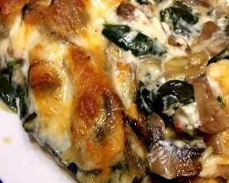

Checken and Egg Casserole
Home

Description
This is a recipe for chicken and egg casserole with mushrooms and spinach
added for flavor. This recipe is simple and convenient to make while
still being a relatively healthy option. Especially if you are looking
for a low carb option. The whole pan of 8 servings has less than 10 grams
of carbs!
This recipe is fairly simple but has a few important parts. Do not forget
the anti stick spray on the pan. Unless you like spending all your free
time scrubbing. Also this recipe uses bagged pre grilled or roasted chicken.
This is because the creator uses this as a meal prep recipe. You are welcome
to prepare your own meat from scratch. Please do so before all other steps
in this recipe.
Servings 8
Ingredients
- 16oz chicken, grilled or roasted
- 9 extra large eggs or 11 large eggs
- 8oz baby bella mushrooms sliced
- 4oz of spinach
- 1 1/2 cups of shredded sharp cheddar cheese
- 1/4 cup of olive oil
- seasoning salt
- pepper
- powdered garlic
- no stick spray
Cookware
- One 12x9 baking pan
- One large frying pan
- One large mixing bowl
- Oven
- Stove
Steps
- Pre heat your oven to 375 degrees.
- Apply anti stick spray to the 12x9 pan.
- Turn the stove on to meduim heat and place all 8oz of mushrooms in
the frying pan. Add the 1/4 cup of olive oil and saute. The mushrooms
will absorb the oil then release it once fully cooked.
- Transfer all the mushrooms into the 12x9 pan and spread out evenly.
- Place half of the 4oz of spinach into the frying pan previously
used on the mushrooms. Stir until all the spinach are withered.
- Transfer the finished spinach into the 12x9 pan.
- Repeat the previous 2 steps.
- Sprinkle 1 cup of the sharp cheddar cheese on the 12x9 pan on top
of the spinach and mushrooms.
- Add all 16oz of chicken on top off everything in the 12x9 pan and
spread evenly.
- Add an even coat of seasoning salt, pepper, and garlic powder on
to everything in the 12x9 pan. Season to your preference.
- Break open all 9 or 11 eggs into the large mixing bowl. Beat
until all the eggs are thoroughly mixed.
- Pour the beaten eggs into the 12x9 pan. Press down on the exposed
peices of chicken to make sure they are covered in a thin layer of
raw egg. This is important it keeps the chicken from drying out in
the oven.
- Sprinkle the remaining 1/2 cup of cheddar cheese onto the top of the
12x9 pan.
- Place the 12x9 pan into the oven and sset a timer for 40 minutes.
- Remove from the oven after the timer has elapsed and cover to prevent
drying out. Leave on the counter until cooled to an edible temperature.
- The dish is now complete.